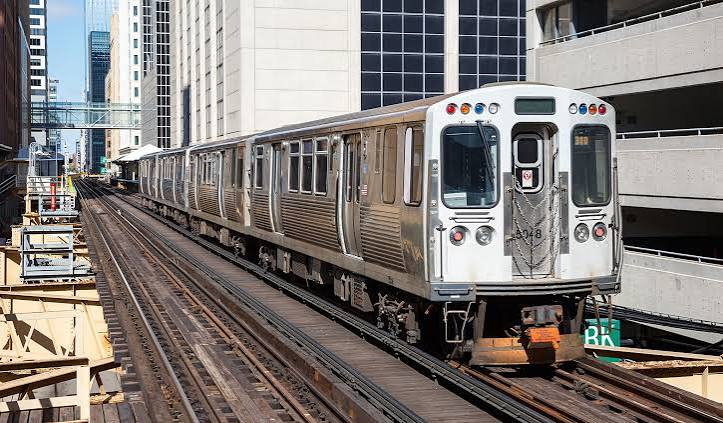

Data Visualization Team Project
We used CTA ridership data to explore how crime, COVID-19, and service frequency relate to ridership across Chicago's L stations.

We used CTA ridership data to explore how crime, COVID-19, and service frequency relate to ridership across Chicago's L stations.
A sample post introducing this e-Portfolio. My own projects will be added later in the semester.
A sample post showing how code and output can appear on a project page.